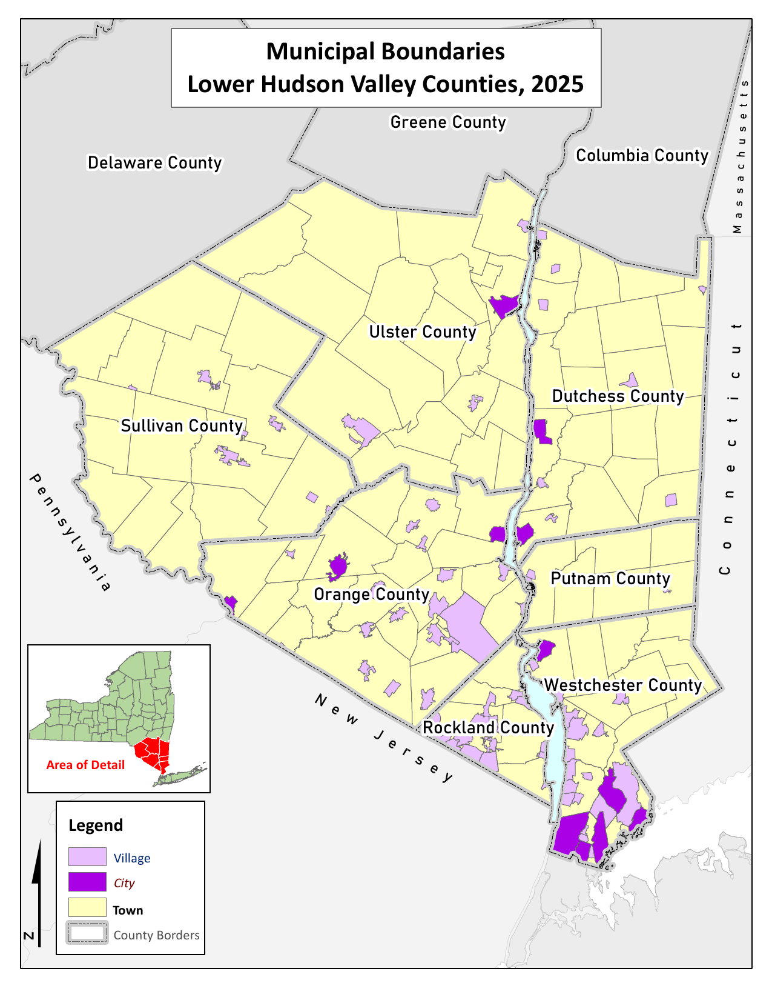
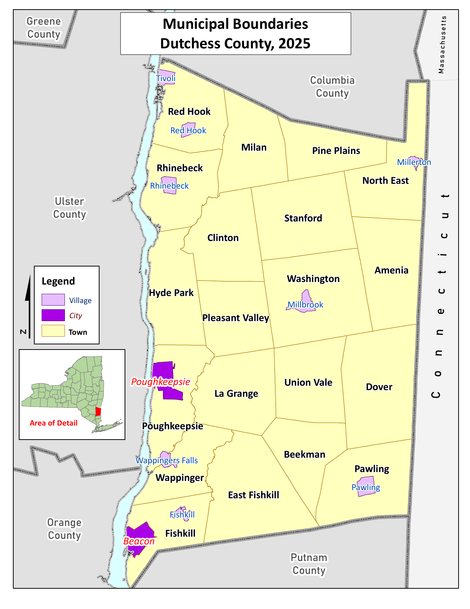
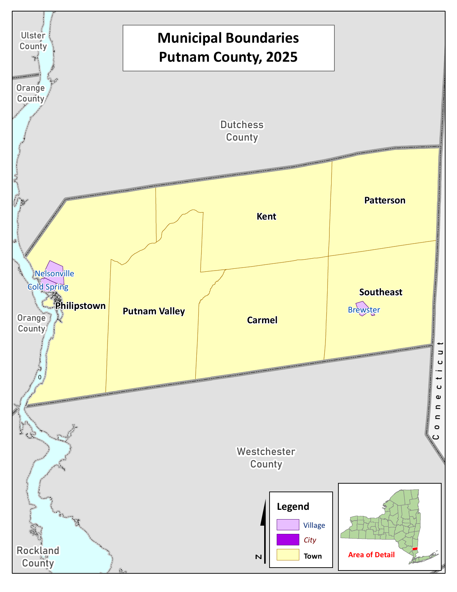
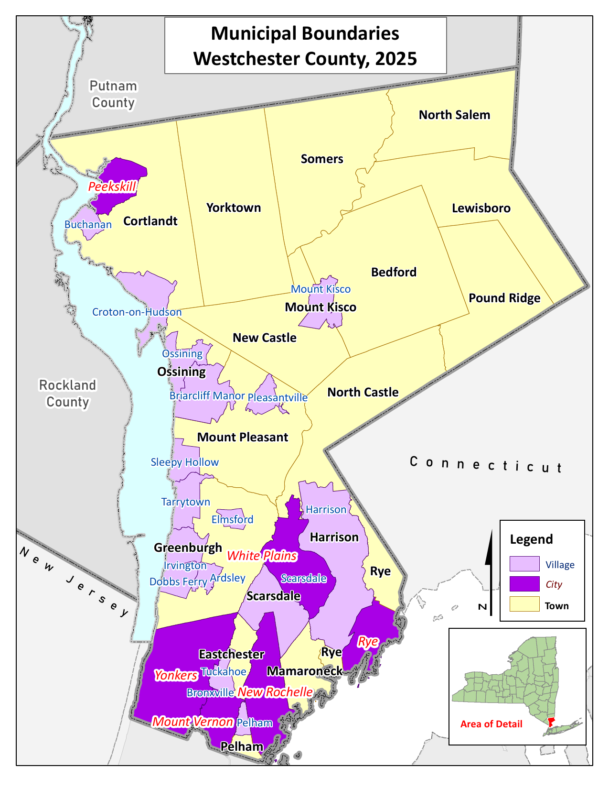
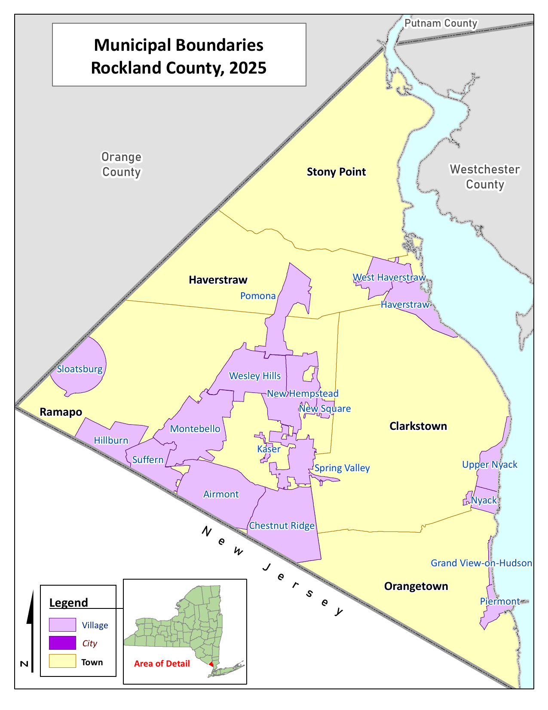
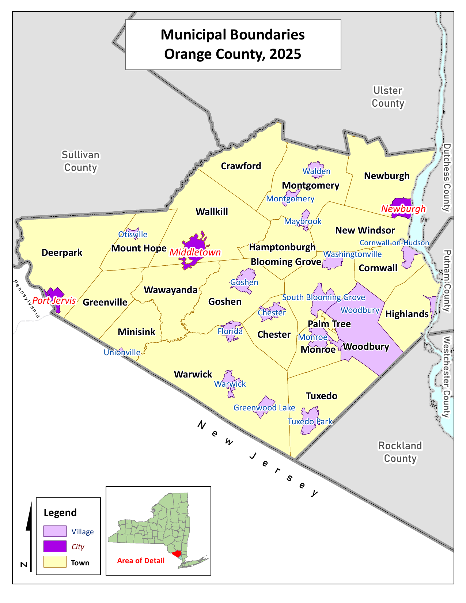
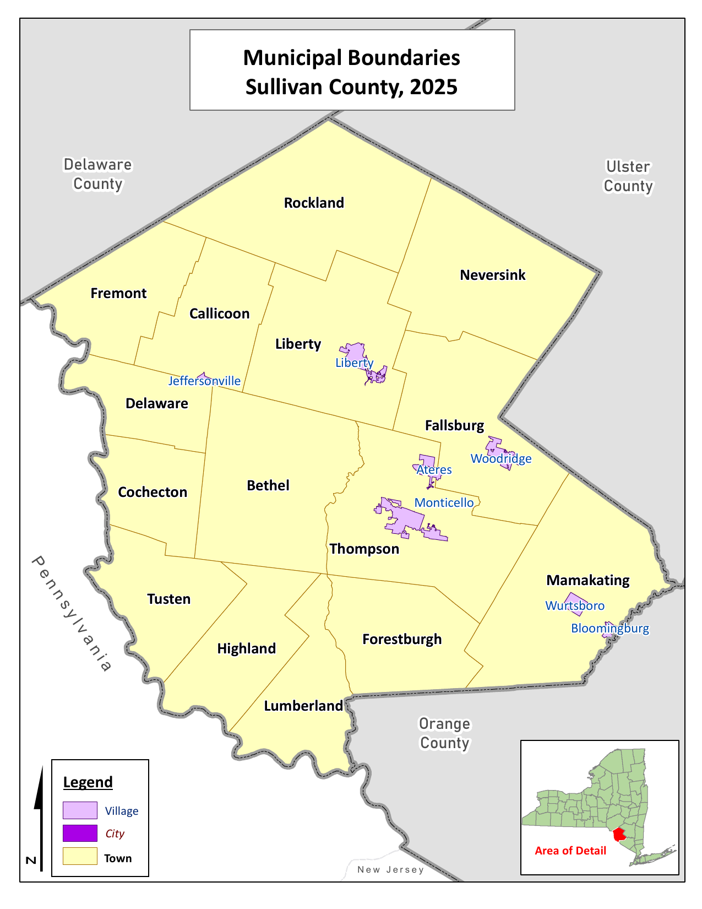
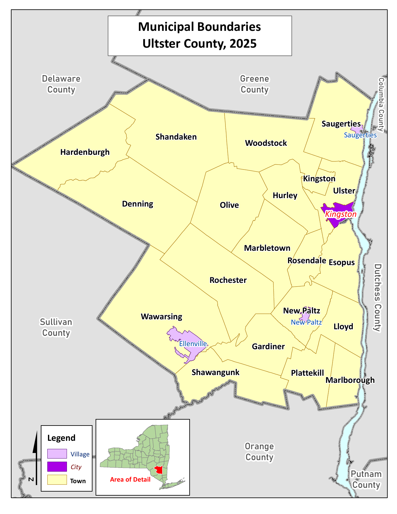

16 List of Appendices
16.1 Appendix A - Mid-Hudson Region Map

Open full PDF16.2 Appendix B - Dutchess County Map

Open full PDF16.3 Appendix C - Orange County Map

Open full PDF16.4 Appendix D - Putnam County Map

Open full PDF16.5 Appendix E - Rockland County Map

Open full PDF16.6 Appendix F - Sullivan County Map

Open full PDF16.7 Appendix G - Ulster County Map

Open full PDF16.8 Appendix H - Westchester County Map

Open full PDF16.9 Appendix I - Mid-Hudson Region Community Partner Survey
16.10 Appendix J - Mid-Hudson Region Community Partner Survey References
16.11 Appendix K - Putnam County and Nuvance CBO and Partner Survey
16.12 Appendix L - Mid-Hudson Regional Community Health Survey
16.13 Appendix M - Orange County Community Health Survey
16.14 Appendix N - Orange County Community Asset Survey
16.15 Appendix O - Putnam County and Nuvance Community Health Experience Survey
Putnam County and Nuvance Community Health Experience Survey
16.16 Appendix P - Rockland County Community Health Assessment Survey
16.17 Appendix Q - Greater New York Hospital Association 2025 Community Health Needs Assessment Survey
Greater New York Hospital Association 2025 Community Health Needs Assessment Survey